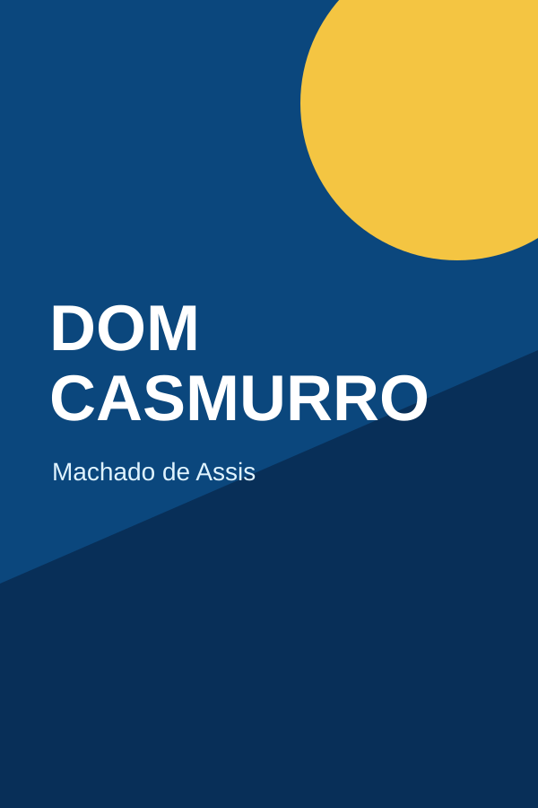
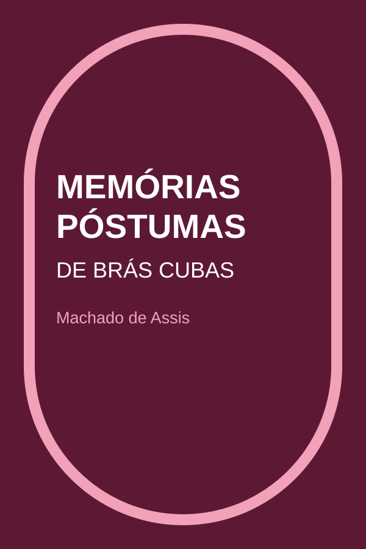
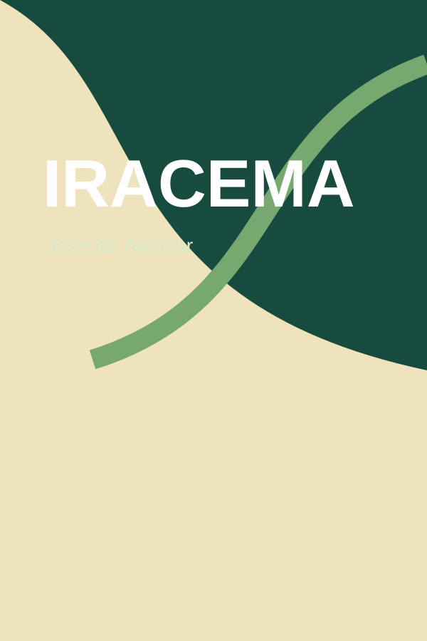
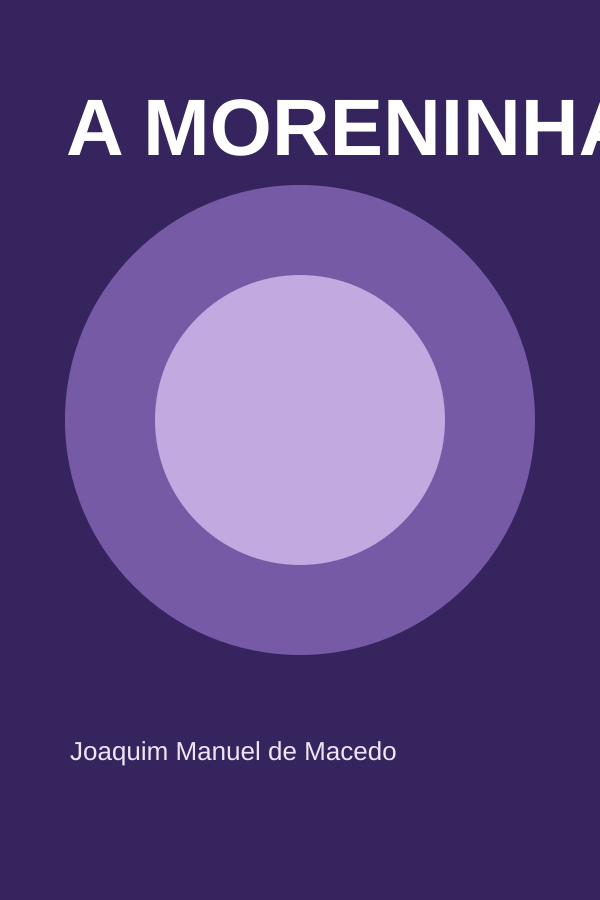

Literatura brasileira
Dom Casmurro
Machado de Assis
Romance narrado por Bentinho, marcado por memória, dúvida e ciúme.
Consultar no Domínio Público — abre em nova abaConhecimento que aproxima
Uma proposta acadêmica de biblioteca digital criada para tornar a busca por conhecimento clara, acolhedora e acessível.
Conheça a seleção de livrosSobre a nossa biblioteca
Esta interface demonstra como conteúdos de uma biblioteca acadêmica podem ser apresentados de forma organizada. O projeto prioriza leitura confortável, navegação simples e adaptação a diferentes telas.
Os itens exibidos têm finalidade demonstrativa e não representam um catálogo ou serviço institucional ativo.
Conteúdo organizado para consulta clara.
Exemplos de diferentes áreas e autores.
Estrutura visual voltada à rotina de estudos.
Seções objetivas e links internos descritivos.
Seleção demonstrativa
Seis obras reais em domínio público, apresentadas como exemplo de organização visual.

Literatura brasileira
Machado de Assis
Romance narrado por Bentinho, marcado por memória, dúvida e ciúme.
Consultar no Domínio Público — abre em nova aba
Literatura brasileira
Machado de Assis
Um defunto-autor revisita sua vida com ironia e crítica social.
Consultar no Domínio Público — abre em nova abaNaturalismo
Aluísio Azevedo
Retrato coletivo das relações sociais em uma habitação popular carioca.
Consultar no Domínio Público — abre em nova aba
Romantismo
José de Alencar
Narrativa poética sobre encontro cultural, amor e formação simbólica.
Consultar no Domínio Público — abre em nova aba
Romantismo
Joaquim Manuel de Macedo
Romance de costumes sobre juventude, promessa e descoberta amorosa.
Consultar no Domínio Público — abre em nova abaPré-modernismo
Lima Barreto
Sátira sobre idealismo, nacionalismo e instituições brasileiras.
Consultar no Domínio Público — abre em nova abaAmbientes demonstrativos
Blocos conceituais inspirados em diferentes experiências de estudo. Não representam endereços reais.
Ambiente conceitual dedicado à concentração, leitura e pesquisa individual.
Representação de uma área para organizar atividades e materiais acadêmicos.
Exemplo visual de área voltada à consulta e descoberta de diferentes obras.
Informações
Este site é uma atividade acadêmica e não oferece atendimento, empréstimo ou acesso institucional. Consulte informações atualizadas diretamente no portal da UniFECAF.